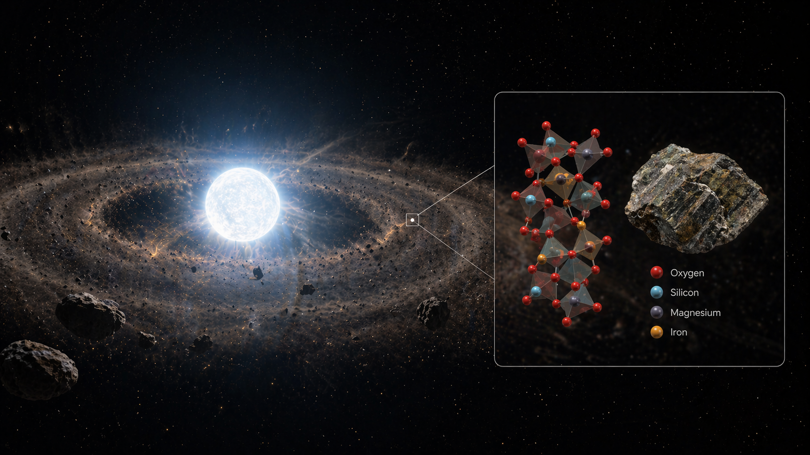

Spectroscopy
Analysis and interpretation of spectral features encoding chemical, thermal, and dynamical information.
Using spectroscopy, disk modeling, and computational tools to study what survives when planetary systems die
My research focuses on polluted white dwarfs and the circumstellar material that reveals the composition and evolution of planetary systems after the main-sequence lifetime of their host stars.
I approach these systems as a form of cosmic forensics: using spectroscopy, disk modeling, and numerical workflows to infer the physical and chemical history of material left behind by disrupted planetary bodies.
The science approached from three angles — the stars, the material around them, and what that material tells us about planetary history.

White dwarf atmospheres can preserve signatures of accreted planetary material. I use these systems as chemical probes of disrupted exoplanetesimals and planetary debris.
Dust and gas disks around white dwarfs connect observed spectra to the physical structure, temperature, and composition of material close to the star.
Each polluted white dwarf system is a partial record of a planetary system's history. The scientific challenge is extracting that record from incomplete and complex data.
Computational and observational, with emphasis on turning physical questions into modelable, testable workflows.
Analysis and interpretation of spectral features encoding chemical, thermal, and dynamical information.
Modeling circumstellar material to connect composition, temperature, geometry, and radiative behavior.
Systematic model generation and comparison across large parameter spaces to understand degeneracies and constraints.
Python, shell workflows, databases, and visualization tools for reproducible, searchable research analysis.
Why the research background transfers to data and software roles.
A curated list of publications, talks, and research products. See CV for a full list.
I study planetary systems after stellar death by treating polluted white dwarfs as cosmic mass spectrometers. Their atmospheres and surrounding disks offer clues about the composition of rocky material beyond the Solar System.
That research has also shaped how I build technical systems: I am used to ambiguous data, long-running computations, messy intermediate products, and the need to make results traceable, searchable, and interpretable.